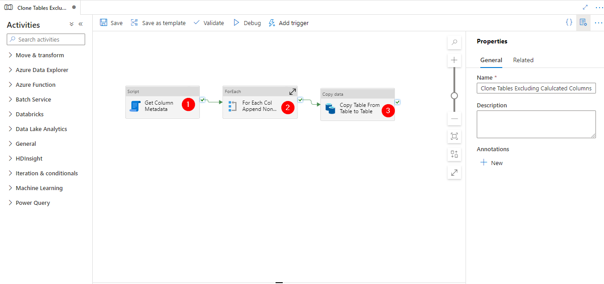
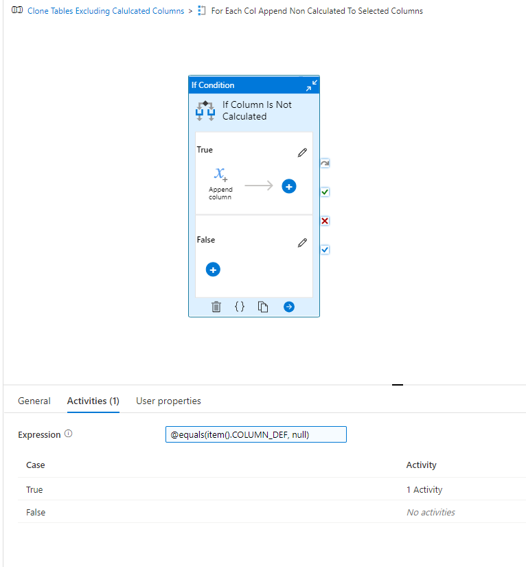
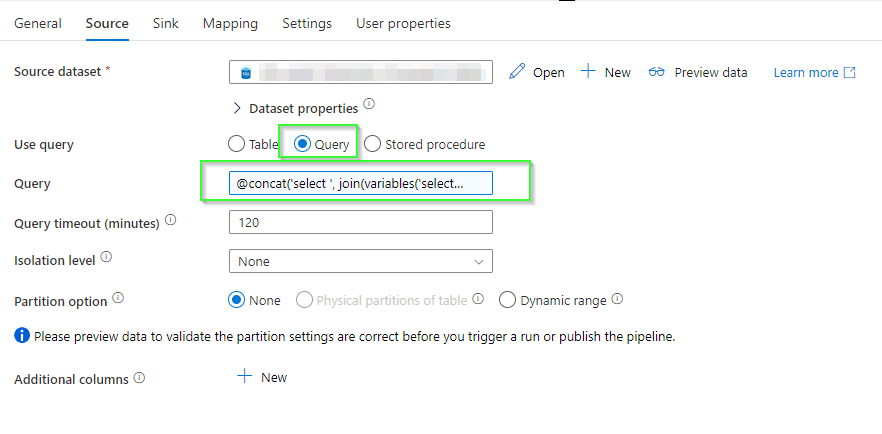

Introduction
Recently, I encountered an issue where we had to copy data from one Azure SQL database to another using Azure Data Factory (ADF) V2. The entire process was dynamic using parameters to select a table to be copied to the target database. A simple enough problem, right?
Well no, firstly the table definition existed in the target DB, which given that it was a direct copy of the data shouldn’t pose a problem. However, the table definition contained calculated columns to capture the date of ingestion.
Problem
So now the problem becomes, “How do I exclude columns from an ADF Copy Activity based upon their metadata properties?”
The first thing that comes to mind is GET Metadata activity in ADF. Sadly that doesn’t have sufficient detail about the column definitions.
The next thought was the stored procedure sp_columns which returns metadata about columns and is a tool I’d imagine almost all data engineers use in the their SQL development workflow. So that’s what I did, using the (relatively) new script activity in ADF.
Solution
The pipeline used to achieve this can be found here for reference. (note linked services and datasets etc are omitted)
The pipeline has 3 main components:

- The Script Activity which takes the pipeline parameter and concats sp_columns with it to retrieve table metadata like
@concat('sp_columns ',pipeline().parameters.param_table)
The resulting output is json that has the following structure
Note :the other metadata here so this approach may have merits for other column property driven processes you need in ADF.
For our uses we should focus on the COLUMN_DEF property which should this be a computed column then would contain an expression and not be null!
- For each entry in resultsSets[0].rows we need to iterate through them and find every column where no column_def exists which will allow us to only include the relevant columns. For this purpose we have created a pipeline variable called selected_columns of type array. We pass that into the items property to iterate
@activity('Get Column Metadata').output.resultSets[0].rows
Inside the for each we have an If statement that checks the above condition @equals(item().COLUMN_DEF, null) and returns true when column def is null. Which then uses the append variable activity to add the column to our selected_columns array

- Finally, we that in our copy activity to build a dynamic select query by converting the array to a , separated string with the join() function. Our ADF expression looks like
@concat('select ', join(variables('selected_columns'),','), ' from ', pipeline().parameters.param_table)
